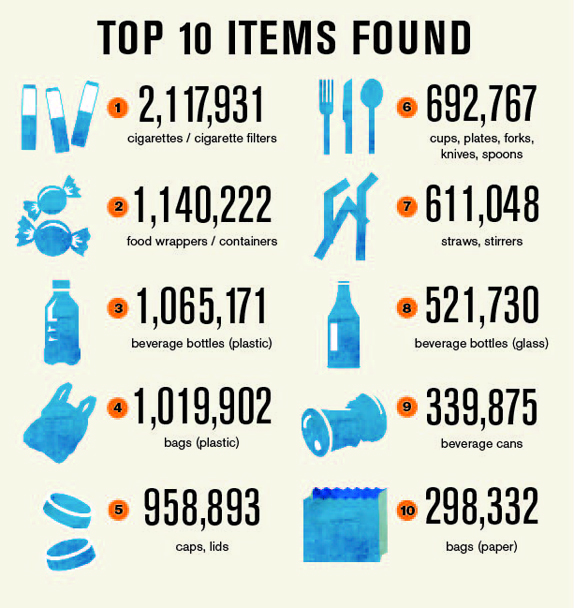
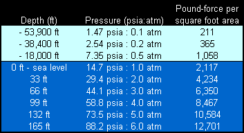

The ocean is a hoarder, taking all trash put into it and holding on to it forever. Commonly found pieces of trash include items we use every day from food wrappers to beverage containers to plastic bags. There are forty chemicals listed in Annex III of the Convention and subject to the PIC procedure, including twenty-five pesticides, four severely hazardous pesticide formulations and eleven industrial chemicals. A large amount of chemicals are expected to be added in the future. These include some of the most dangerous chemicals known to man e.g. - DDT, Mercury, Chlordane and Asbestos.
In order for a robot to effectively operate underwater, it must be able to withstand the hazards of water pressure and the chemical composition of the ocean. According to the National Ocean Service, an underwater object experiences about 14.7 psi of pressure per every ten meters the object is underwater, or 1.47 psi per meter. This is in addition to the average of 14.5 psi of atmospheric pressure, pressure exerted onto an object by the weight of the atmosphere, encountered at sea level. The watertight shell of the robot must also be able to resist the effects of salt dissolved in the ocean water. Metals such as steel or iron will rust, oxidizing and becoming weaker, in water, reducing their strength and making them vulnerable to water pressure. The hull/exterior casing of the robot should either be made of a composite material or a metal which does not rust. Alternatively, the hull can be coated with a substance to reduce rusting, though this may degrade and require replacement. Without these considerations, it is possible that a robot will not be able to function in an underwater ocean environment.
The waste shark is a small water-based drone that can vacuum up to one thousand one hundred pounds of floating debris. It is like a robotic vacuum produced by iRobot for the ocean. Richard Hardiman of RanMarine designed the waste shark to keep the ocean clean. It collects the trash in the 14-inch “mouth” that is below the surface of the water. The waste shark is about the same volume as a passenger car. It is autonomous so it could gather trash in the ocean all day twenty-four seven (24/7)without anybody trying to control where and when it goes. However, it can not travel to far out into the ocean because it might not be able to come back or it is to full. It could only carry one thousand one hundred pounds at a time so if it gets full it needs to go back to throw it out of the ocean then it needs to go back once it's dumped out. It is programmed to do so that is why it is much easier to clean the ocean. Mr. Hardiman made four prototypes to help improve the state's environment . He sent the waste sharks to the Port of Rotterdam Authority in the Netherlands so it could patrol the waters and collect trash.
For a long time now, hazardous chemicals have been released into our oceans and have affected many different types of ocean life. These release of these chemicals has mainly been reduced but some chemicals such as fertilizers, BPAs, PS oligomer, PFOs,POPs, and PFAs are still being released into the ocean in large amounts. We have developed a solution to this problem in the form of the “something” project. The innovation we have designed is able to detect these chemicals water and remove the waste that is releasing these chemicals. The previous invention designed to solve this problem was the Waste Shark. However, this invention was only able to remove trash from water. This is helpful but doesn’t help to stop chemicals that have already been released into the ocean from wreaking havoc on ocean life. Our innovation will hopefully clean up the ocean effectively with the improvements we have made. I hope to see our innovation be put to use in our oceans.
Over the past few years, Dockweiler state beach has been constantly contaminated by the Hyperion Treatment Plant and by airplanes that fly over while on their way to the airport. Our target to help are the citizens that live near Dockweiler state beach and the Hyperion Treatment Plant. In 2015, the Hyperion Treatment Plant disposed hypodermic needles, condoms, and tampons into the ocean and forced Dockweiler state beach to close for approximately half a year. This not only made citizens angry but also caused workers to cleanup all of the debris from the ocean. Even though the spillage was reported as an "accident," the Hyperion Treatment Plant still continues to contaminate Dockweiler state beach. In addition, as of March 6, Dockweiler state beach has been closed due to contamination by airplane fuel.